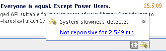

Apache NetBeans
Apache NetBeansFitnessViaPostMortem
Note: These pages are being reviewed.
This is a continuation of the FitnessViaPartnership that enhances the original ideas with automatic postmortem identification and notification of problems. Done as part of performance work for 6.8.
How it works?

-
Detects that AWT thread is blocked for more than certain time (100ms in dev builds, 10s in final production build)
-
Starts self-sampling profiling
-
As soon as AWT thread is free:
-
stops the profiling
-
if the elapsed time is more than appropriate (3s in dev builds, 20s in final production build), it displays a notification
-
the notification stays on for a minute, then it disappears
-
-
What are the user’s options?
-
ignore the icon (disappears after a minute)
-
submit a bug report via FitnessViaPostMortemAutoReport *¿ explore the content themselves (view data/show profiler data and work in editor as the dialog is modal)
-
What our users shall do?
Enabling the slowness detector
The slowness detector is enabled by default in development builds and beta builds. However, it is disabled by default in final releases in NetBeans, and in release candidates. To enable the slowness detector in the FCS and RC builds, it is necessary to enable assertions, i.e. run the IDE with the following switch:
-J-eaAlternatively, the -J-ea parameter can be added to the netbeans_default_options property in etc/netbeans.conf.
Not all slowness is a problem.
Sometimes it may be acceptable. For example if the system wakes up from hibernation, etc. In such case just ignore the report and close it.
I don’t care about slowness
In case you are annoyed by the "slowness detector" you may disable it by providing additional properties when launching NetBeans. For example to report only blockages higher than 10s use:
-J-Dorg.netbeans.core.TimeableEventQueue.report=10000You can also increase the time when the sampling starts:
-J-Dorg.netbeans.core.TimeableEventQueue.quantum=1000Since 6.9 development time there is also slowness detector on code completion. If it takes more than 2s to provide results, it starts self profiling and allows you to complain. You can adjust the time by specifying:
-J-Dorg.netbeans.modules.editor.completion.slowness.report=10000(to be included in 7.0beta2).
Real Slowness
If you really noticed the slowness (e.g. blocked mouse, or keyboard input), then you can submit it for evaluation to FitnessViaPostMortemAutoReport or you can evaluate the snapshot first and then submit it.
To evaluate the snapshot follow these steps: click on the slowness notification icon in bottom right corner, click view data and click show profiler data. Snapshot is open in editor area and you can work with it as above dialog is modal are modal.
Thanks in advance for your help!
Evaluating Snapshot
-
Important things are happening in AWT-Event threads. Explore what is happening there.
-
If the snapshot ends in
Object.wait()or while waiting on some lock, explore other threads to see who’s blocking the evaluation
-
Weird Behaviour
There are some things that can confuse those who evaluate the profiler snapshots taken by the slowness detector. Please be patient, the improvements are in the queue:
-
Sum of time of all threads is wrong - currently the time of all threads is summed up, which is wrong. We use sampling and we are measuring the real time, not CPU time. The sum for all threads shall be max of all thread times. Confusion among poor developers would be lowered.
-
Object.wait() interpretation is almost impossible - Just try to analyse dump from IZ 168536 and find out why the AWT thread is blocked. Quite hard and some simplification is needed.
-
Hotspots Tab Unusable - most developers start understanding of a slowness problem by looking at Hotspots tab of the snapshot. However this is currently unusable as it primarily shows CLI Handler and XAWT-Dispatch threads as the biggest bottleneck (they are waiting for socketAccept or other I/O). This results in large confusion, useless close/reopen bug lifecycle stage, etc.
-
Inaccurate Snapshots - the accuracy of the snapshot’s data depends on regular execution of the time (e.g. each 10ms a thread dump shall be taken). This may not be satisfied all the time, especially if the system is being awaken from hibernation, etc. This needs to be detected and indicated.
We need help from profiler team to improve the snapshots themselves or simplify life of those who analyse them. Please, help our developers be more productive!
Plan to Address Weird Behaviour
-
 Have a meeting with profiler guys
Have a meeting with profiler guys -
'Jarda': Write the plan
-
native wait - treat Object.wait and native.html[[native state equally (e.g. zero execution time)
-
two times - output two times (execution time, wall clock time) into the .nps file
-
display two times - make sure the UI represents the two times in some columns
-
no sum for threads - the sum of all threads execution is incorrect (in sampling or on multicore CPUs), thus hide it
-
JMX - rewrite the sampler to JMX. This will open the door to possible use in VisualVM as well as provide more info about the real thread execution time
-
overhead is slightly less than 10% - Jarda: measure overhead of sampling (I ran the sieve of erastothenes for first 100000 numbers. Without self profiling 4.1s+-100ms with profiling 4.3ms+-100ms)
-
inaccuracy: compute average snapshot time and ignore intervals that are far (more than 30ms) from average. Potentially don’t report these snapshots at all as a slowdown.
Tentatively:
-
collect wait info: generate a subnode below Object.wait() or monitor enter(?) with a subtree of other threads activity during the blocked time
-
format: change the sampling format to be (more or less) GZip of stacktraces. Processing to tree structure would occur later. Done for NetBeans 6.9
|
The content in this page was kindly donated by Oracle Corp. to the Apache Software Foundation. This page was exported from http://wiki.netbeans.org/FitnessViaPostMortem , that was last modified by NetBeans user Pjiricka on 2011-04-06T15:24:36Z. This document was automatically converted to the AsciiDoc format on 2020-03-12, and needs to be reviewed. |